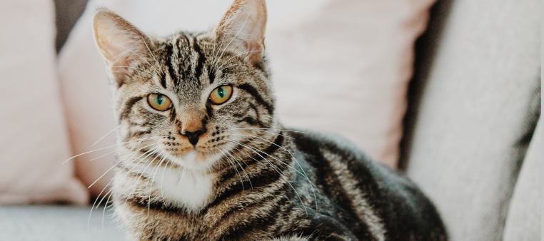

Artikel
Memberi Makan Kucing yang Benar


Sumber
https://ternakhewan.com/cara-memberi-makanan-kucing/
Tanggal
3 September 2021
https://ternakhewan.com/cara-memberi-makanan-kucing/
3 September 2021
Kucing menjadi salah satu hewan yang paling digemari untuk dipelihara oleh manusia. Memelihara kucing mampu membuat pemelihara merasa bahagia. Kucing dapat dijadikan sebagai teman bermain. Namun seringkali dijumpai pemelihara kucing yang tidak mengetahui cara merawat kucing dengan baik dan benar. Seringkali kucing menjadi sakit akibat pemberian makan yang kurang tepat.
Dalam memberi makan kucing, kita harus memperhatikan kondisi fisik, riwayat kesehatan dan usia. Pemberian makan yang salah akan mengganggu kesehatan kucing. Selain itu pastikan bahwa makanan yang diberikan belum melewati tanggal kadaluarsa sehingga masih layak untuk dikonsumsi. Berikut adalah beberapa cara memberikan makan kucing yang baik dan benar.
1. Mengatur jadwal makan
Pemilik hewan peliharaan harus menentukan jadwal pemberian makan pada kucing. Jangan sampai kucing peliharaan merasa kelaparan akibat pola makan yang tidak teratur. Anda dapat menentukan jadwal pemberian makan sendiri. Misalnya pemberian makanan dilakukan pada malam dan siang hari. Sedangkan sore hari adalah jadwal memberikan cemilan.
2. Memberikan makanan yang bernutrisi
Hal yang berlebian maupun kekurangan tentu saja tidak baik. Sama dengan porsi makan kucing. Memeberikan makan kepada kucing tentu saja harus sesuai dengan kebutuhan. Apabila terlalu banyak maka menyebabkan obesitas. Apabila terlalu sedikit maka fisik kucing akan melemah dan terlihat kurus. Selain itu berikan makanan yang sesuai dengan usia kucing.
3. Memberikan makanan yang sesuai dnegan kebutuhan
Banyak sekali makanan kucing yang dijual dipasaran. Namun kita harus memperhatikan banyaknya kebutuhan nutrisi yang dibutuhkan. Kebutuhan kalori pada kucing bergantung pada berat bedan dan tingkat aktivitasnya. Misalnnya kucing dewasa dengan ukuran rata-rata biasanya membutuhkan kurang lebih 250 kalori dalam satu hari dengan karbohidrat, lemak, protein, vitamin dan mineral.
4. Mencampurkan makanan basah dan makanan kering
Makanan kucing sendiri memiliki dua jenis yaitu makanan basah dan makanan kering. Tentusaja kandungan nutrisi didalamnya berbeda. Makanan yang kering memiliki lebih banyak kandungan kalori. Sementara makanan basah atau wet food mempunyai lebih banyak kandungan cairan.
5. Hindari makanan yang berbahaya
Terdapat makanan yang perlu diindari oleh kucing karena akan menyebabkan timbulnya penyakit. Misalnya seperti anggur dan kismis yang menyebabkan gangguang gagal ginjal dan muntah muntah. Selain itu kenali alergi yang dimiliki oleh kucing anda. Terdapat beberapa kucing yang alergi terhadap susu karena akan menyebabkan diare dan masalah pencernaan lainnya.
Begitulah cara yang dapat anda lakukan untuk memberi makan kucing peliharaan dengan baik dan benar. Tetap perhatikan kondisi kesehatan kucing anda dengan memebrikan makanan yang teratur dan berkualitas.
Hubungi sosial media kami jika ingin bergabung di organisasi ini atau ingin berdonasi